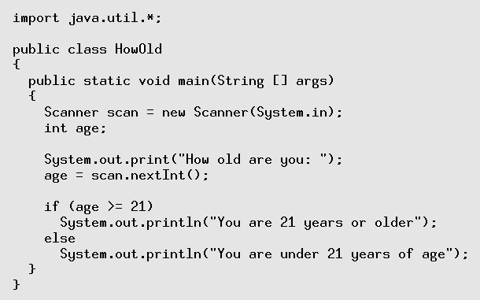
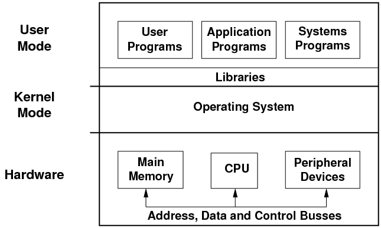
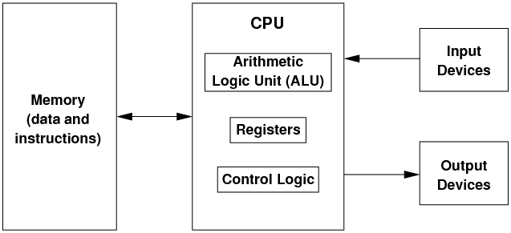
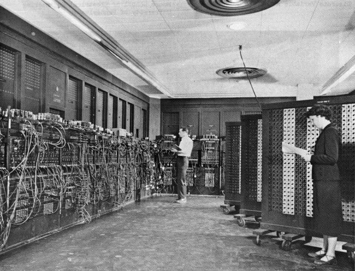
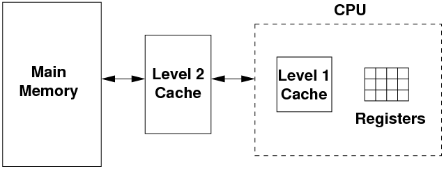
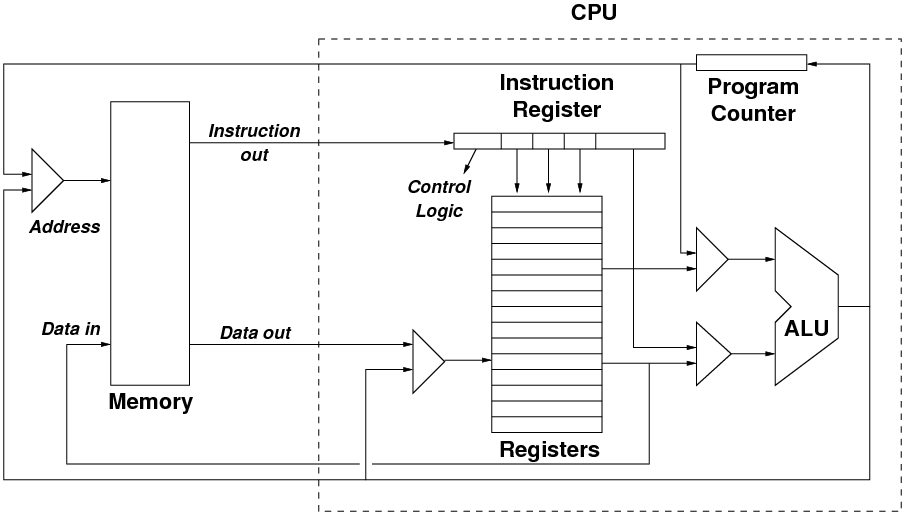

Introduction to Systems Architecture
1 Introduction

- From previous subjects, you've seen programs in Java like the one
above.
- You have been told that this is translated, via bytecode, into machine
instructions which then run on the computer.
- This raises several questions, like:
- Exactly how does the computer hardware, and the CPU in particular,
run machine instructions?
- How are files stored and organised on the hard drive?
- How can my machine be running many applications at the same time,
even though I only have one CPU?
- Exactly what is an operating system, and why do I need one?
- These are the sort of questions that we are going to answer in this
subject.
- We are going to look at what happens when your program runs, when
it asks the system to do System.out.print() etc.
- We will be looking at the hardware/software interface: how does the
hardware run software, and how does software tell the hardware what
to do.
- We will also place a focus on the security aspect of the combined
hardware/software system: what features of each permit or restrict
functionality, to whom, and how the hardware/software work in tandem
to improve the overall security of the combined system.
2 A Computer System: Layers of Functionality
- We can view a computer system as a set of layers, each one providing
some functionality to the layers above, and hiding the messy details
of the layer behind some interface or set of abstractions.
Here are the main ones:

- The system can run three basic types of programs:
- User programs are the ones that users write themselves, such as the
Java program above. Unfortunately, this is becoming rarer and rarer.
- Application programs are those which provide a certain application
or functionality to the user, such as web browsers, document editors,
spreadsheets, e-mail readers etc.
- Systems programs are those programs which come with the operating
system and which allow the user to do low-level, diagnostic or configuration
operations, e.g. set up networking, check the ink levels in the printer,
defragment the files on a hard disk etc.
- Below the programs are a set of libraries. Each library contains a
set of commonly-used functions which are made available to the programs
so that programmers don't have to keep rewriting them. For example,
the sqrt() maths function is in the library, as are functions
to draw windows and widgets on the screen, to do DNS queries etc.
- All of the above operate in user mode. In this mode, direct
access to the hardware is prohibited. Programs running in user mode
are given an address space, visible only to themselves, which
contains enough memory for them to do their job.
- Below the user mode is the operating system, which runs in kernel
mode. It has full access to the hardware, as well as access to all
the free memory and the memory in use by the running programs.
- The operating system has three main tasks to perform.
- The operating system must shield the details of the hardware from
the application programs, and thus from the user.
- The operating system has to substitute a set of abstract
services to the application programs, to replace the physical hardware
services. When applications use these abstract services, the operations
must be translated into real hardware operations.
- Finally, the resources in a computer (CPU, memory, disk space etc.)
are limited. The operating system must act as a resource manager,
optimising the use of the resources, and protecting them against misuse
and abuse. When a system provides multiuser or multitasking capabilities,
resources must be allocated fairly and equitably amongst a number
of competing requests.
- So far, all of these levels are software levels. In general, the programs,
libraries and the operating system are translated to machine instructions.
Programs run their instructions, and as required they can request
the libraries and the operating system to perform some tasks on their
behalf.
- Below the software is the hardware, whose job is to run the software
instructions in the programs, libraries and the operating system.
The main components are:
- the CPU which actually performs the instructions. However, it only
has immediate access to a small number of very fast memory locations
known as registers. To store large amounts of data which a
program is running, we need
- main memory, which has large amounts of much slower data storage.
This holds the machine instructions of the programs which are running,
and the data they are currently using.
- The CPU and main memory are connected to the other, peripheral devices
devices on the system such as I/O devices like keyboards and screens,
network interfaces, hard disks etc. Typically, the main memory is
about 100x slower than the CPU, and the peripheral devices are 1000x
or more slower than the CPU.
- All of the hardware is interconnected by a set of busses
which move data between the hardware devices, as well as the machine
instructions and other control signals.
2.1 Interfaces and Abstractions
- As mentioned, each layer hides its own messy details and instead provides
an interface or a set of abstractions to the layer above. Let's quickly
look at each of the interfaces and abstractions.
- Internally, the operation of the CPU, and the intercommunication between
it, the memory and the peripheral devices is nasty, complicated, and
of no consequence to the programmer who just wants to run her programs.
- The CPU hides its operation, and replaces it by a set of machine
instructions which the programmer can use to tell the CPU what to
do. In general, all CPUs provide instructions to:
- do basic maths: add, subtract, multiply, divide.
- make comparisons between data items: ==, !=, >, >=, <, <=
- deal with data items of different types and sizes: characters, integers,
floating-point numbers.
- divert the CPU to new instructions depending on the result of a comparison:
branches, jumps, function calls.
- deal with the differing levels of privilege (user mode and kernel
mode), and to control the main memory and the peripheral devices.
- Each CPU has a different set of instructions, and we refer to each
one as the CPU's instruction set architecture
or ISA.
- We will be looking at the internal operation of the CPU, as well as
the design of instruction sets and the ISA of some example CPUs.
- The next interface is that provided by the operating system, which
controls the hardware for security and peformance reasons, and attempts
to allocate resources equitably to a number of competing programs.
- The operating system shields the programs from the hardware, and substitutes
a more abstract set of services.
- Examples of these abstract services are:
- the process, which is a program in execution surrounded by
an environment which only it has access to.
- virtual memory, which allows a process to appear to have more
memory than is physically on the system.
- files and a filesystem, a tree-structured collection
of documents, whereas the disk hardware does not provide this.
- windows and their management, again a concept which the graphics
hardware does not provide.
- These operating system services come in the form of a set of system
calls. A program can make a system call, and ask the operating system
(in kernel mode) to perform some action that the program (in user
mode) cannot do itself, e.g. create a new file, or get another 100
M of memory, or print a document to the printer.
- Above the operating systems are the libraries. Each library usually
groups several related functions together. We call the set of functions
that a library provides its Application Programming Interface,
or API.
- Side note: from now on, as you use things, look out for abstractions
and interfaces.
- When you sit in the driver's seat of a car, what is the interface?
Is it standardised, or are there a few different interfaces?
- When you use your mobile phone, what is the interface?
3 The Basics of Computer Architecture
- In the first half of the subject, we are going to look at how the
CPU is designed and how it interacts with the other hardware components
of the system: main memory, disk drives, input/output devices like
the keyboard, network card etc.
- All of this is known as computer architecture.
- We are going to stay just above the electronics side of the area (computer
engineering) and concentrate on the logical side of computer architecture.
3.1 von Neumann Design and the Instruction Cycle
- Nearly all modern computers are designed using the von Neumann architecture,
also known as the stored-program architecture.

- In this architecture, there is a processing unit (which we call the
Central Processing Unit or CPU) which performs the
basic computing operations (add, subtract, etc.).
- This unit obtains its data from an external memory unit, and writes
back the results to the memory unit.
- The memory unit is also used to hold the program instructions, which
control the processing unit and tell it how to manipulate the data.
The idea of keeping both the data and the instructions in the memory
unit is the essence of the stored-program architecture.
- Why is this important? Early computers like ENIAC were programmed
by manually rewiring parts of the computer, so as to change the hard-wired
program instructions.

(from Wikipedia)
- John von Neumann, among others, realised that the program's instructions
could be stored in memory.
- The computer could then fetch the next instruction from memory, decode
the meaning of the instruction, and then perform the instruction.
- If data was required from memory to perform the instruction, this
could also be fetched. When the instruction was complete, any result
of the instruction could be written back out to memory.
- Thus, to perform an instruction on a von Neumann machine, we need
to perform an instruction cycle:
- fetch the next instruction
- decode the instruction
- execute the instruction
- save the results of the instruction
- This also implies that the computer is keeping track of where in memory
the next instruction is located.
- Internally, the CPU keeps a program counter, or PC,
which holds the address of the next instruction to fetch.
- The "counter" part is a bit of a misnomer; it's probably better
to call it the "next instruction address".
- In the normal flow of execution, instructions are consecutive, so
the CPU can increment the PC to be the address of the next instruction.
- However, when the CPU makes decisions or loops, the next instruction
is not immediately after the previous one, so the PC is not simply
incremented; its value jumps. We will see how this is done later.
3.2 The Structure of Memory
- For the purposes of this subject, we can view memory as an array of
cells; each cell holds one byte (i.e. 8 bits).
- Each cell has a unique numeric address, starting at 0 and going up
to some large number:
| 0 | 1 | 2 | 3 | 4 | 5 | ... |
|
| 01010010 | 11111110 | 10111000 | 00010010 | 01011001 | 11001100 | ... |
- The CPU and memory are connected via three busses:

- The CPU uses the address bus to inform the memory of the
specific cell it is interested in.
- if the address bus is 32 bits wide, then 232 memory cells can
be addressed. i.e. 4 Gbytes.
- The CPU uses the control bus to inform the memory what operation
to perform: read the cell, (over)write the cell.
- the memory can use the control bus to tell the CPU if the action succeeded
or failed. For example, in a computer with only 2G of 4 Gbytes installed,
accesses to memory locations about the 2G mark will fail.
- Finally, the data bus conveys the data (or a program instruction)
between the CPU and memory.
- on a write, data flows from the CPU to the memory, overwriting the
contents of the cell.
- on a read, data flows from a cell in memory to the CPU.
3.3 The Data Bus Size and the von Neumann Bottleneck
- The size of the data bus defines the natural size of data on a CPU.
- When a computer is called a "32-bit" computer, this means that
the data bus is 32 bits in size, and reads & writes to/from memory
are normally done in groups of 32 bits
- this immediately implies that a 32-bit fetch from address X cannot
just involve the cell at X, because each cell is 1-byte in size
- a 32-bit fetch will fetch 32 bits of data from consecutive cells starting
at address X, i.e. X, X+1, X+2 and X+3.
- We use the term "word" to mean the natural size of
data on a computer. A 32-bit computer uses 32-bit words; a 64-bit
computer uses 64-bit words.
- One of the main drawbacks of the von Neumann architcture is that the
data bus presents a bottleneck: this is the only path through which
the CPU can obtain its instructions and data.
- In practice, this is a real problem. It would be too expensive to
create large amounts of memory which runs as the same speed as the
CPU, so the speed of memory and the data bus is a significant bottleneck
to the design of fast computers.
- One solution is to employ a hierarchy of memory of different amounts
and speeds.
- This works because most computer programs exhibit locality of reference:
over a short period of time, most data and instruction accesses come
from the same set of memory locations. Therfore, we can cache the
values in these memory locations in the higher-speed memory units.

- The CPU performs its operations on a small set of registers,
each of which holds one word of data. Typically, a CPU has between
8 and 64 registers only.
- To manipulate more data than can be kept in the registers, the CPU
needs to read from/write to main memory.
- Using the locality of reference, the most frequent data/instruction
values are kept in the Level 1 cache, which is typically 2-3x as slow
as the registers, and is around 64K-256K bytes in size. The L1 cache
usually resides on the CPU.
- If the L1 cache is too small, a fast data bus connects the CPU out
to the L2 cache. This is typically 10-20x slower than the CPU registers,
and around 1M-16M bytes in size.
- And when the running program's locality of reference exceeds that
of the two caches, the CPU has to go all the way out to main memory
to access data & instructions. Main memory is typically 20-200x slower
than the CPU registers.
- The operation of memory caches is complex and fraught with problems.
We won't be exploring cache operation in this subject. Likewise, the
improving the performance of the CPU with a pipeline will not be explored
in this subject.
3.4 The Difference between Address and Data Bus Sizes
- Note that the address bus and the data bus are separate and unrelated.
- The size of the address bus determines how much memory can be addressed
by a CPU: a 32-bit address bus can only address 4 Gbytes of RAM.
- The size of the data bus determines the natural size of data accesses
on the CPU.
- Unfortunately, many common CPUs like the Intel Pentium have been designed
with both busses the same size. This has given rise to the misconception
that a 32-bit CPU (i.e. one with a 32-bit data bus) can only access
4 Gbytes of memory, which is false.
- It is quite possible to build a CPU with different bus sizes, and
there are many, many examples of this.
3.5 Components of the CPU
- Let's now turn our attention to the components inside the CPU, where
instructions are executed.

(adapted from Britton)
- The above diagram shows the main components of the CPU, and the arrowed
lines show the main flows of data and instructions
- Note that Data in, Data out and Instruction out
represent data flows across the data bus, and
- the flows out from the Program Counter and the ALU into the triangle
labelled Address use the address bus.
- The Program Counter (PC) holds the address of the next instruction.
During the fetch phase of the instruction cycle, the PC's value is
sent across the address bus, and the next instruction travels back
across the data bus into the CPU.
- The incoming instruction is stored in the Instruction Register.
This is decoded to determine:
- what operation to perform.
- what operands does the operation act on: typically, one or
more registers are chosen.
- however, on some architectures, a literal value may be encoded
in part of the instruction.
- and on some architectures, the instruction might require further fetches
of data from main memory.
- Parts of the instruction influence the control logic in the
CPU (not shown in the diagram). The control logic is the set of signals
which control the other components in the CPU, such as the ALU and
the multiplexors.
- Once the instruction is decoded, the execution of the instruction
can start.
- The Arithmetic Logic Unit (ALU), informed via the
control logic of the operation, performs that operation on the operands
and outputs the result.
- The inputs to the ALU are chosen by multiplexors, which receive
a number of inputs, and based on a number of control lines, select
only one of the inputs to propagate to the multiplexor's output.
- When the ALU calculates its output, this needs to be stored somewhere.
This could be:
- back into a register in the CPU, or
- stored in the Program Counter, e.g. when a jump is performed to skip
past some instructions. Otherwise, the PC will just increment to the
next value, or
- the ALU's output can be written back to main memory.
- That ends one instruction cycle. The PC has a new value, and so the
next instruction cycle can begin, with the CPU fetching a new instruction
from memory.
- Finally, note the multiplexor to the left of the main memory block.
This is used to choose either:
- the address of the PC, so that a new instruction is fetched from memory,
or
- the address of a data item, so that it can be fetched from memory,
or overwritten with a new value.
- Similarly, the multiplexor to the left of the registers chooses which
register will be overwritten with data from memory, or the result
of the ALU's operation.
File translated from
TEX
by
TTH,
version 3.85.
On 2 May 2011, 10:25.